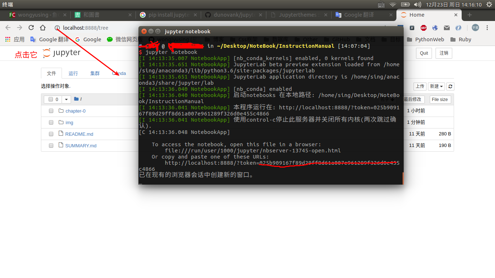
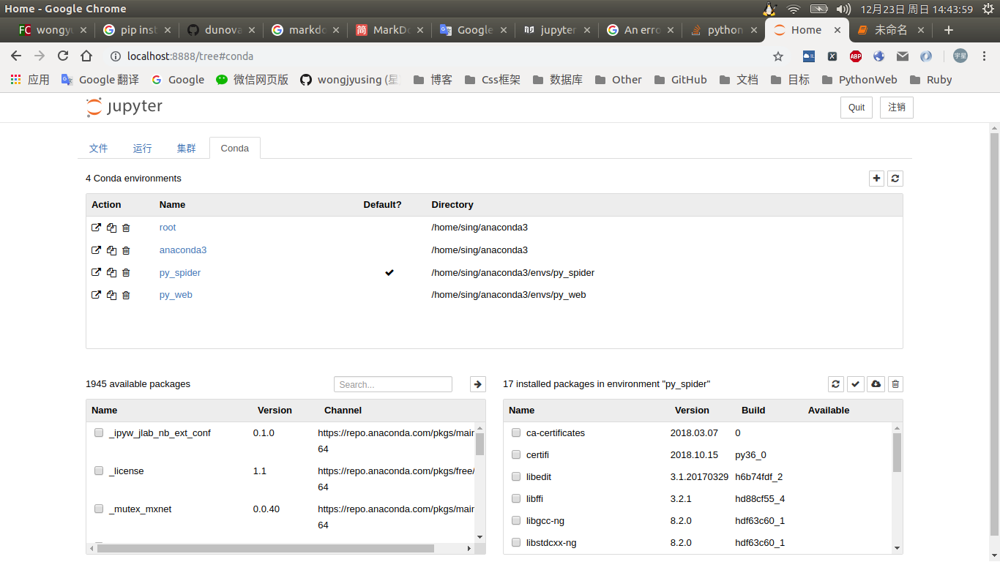

配置jupyter notebook
在安装完anaconda后，里面最最好用的神器jupyter notebook
当然，也需要配置一下方可使用到它的功能。
首先，没有配置前是无法使用到虚拟环境的。
而虚拟环境很重要的。
做任何项目，务必使用虚拟环境。
在安装完anaconda后，执行下面的命令安装nb_conda。conda install nb_conda
这个时候，我们可以在终端机输入下面的指令来开启jupyter notebook
注意务必进入了虚拟环境再执行下方的命令。进入方法可以浏览本篇页面的底部。jupyter notebook
这句命令会默认打开我们电脑中的默认浏览器
就可以看到我们的jupyter界面了。
如图：

当我们想查看当前的虚拟环境只需要点击菜单栏的Conda
然后就可以看到我们当前的虚拟环境。
如下图：

如果你是英文界面的话就跟着我进行下面的美化和优化步骤。
美化
切换到运行着jupyter的终端，按下Ctrl + C然后输入y，停止jupyther服务。
新开一个终端机（懒得退出当前的虚拟环境了）
输入pip install jupyterthemes
安装主题包，安装完成后就会变成中文了。
不过，先不要启动，还有一些步骤。
打开jupyter-themes的GitPage
看一下有什么需要个性化的。
不过我个人就更换一个暗黑的主题就行了。看个人喜好吧。
更换主题命令jt -t chesterish -T -N
chesterish是主题的名字。你也可以选择你喜欢的主题进行更换。
如果想看一下有什么主题可以输入下面的命令进行查看。jt -l
把上面的命令中的chesterish替换成你喜欢的主题。
如果想了解更多美化配置请认真阅读它的GitPage
服务配置优化
没配置过jupyter有一点不好，每次启动呢都会打开一个浏览器窗口。
最烦的是每次都会打开一长串的token（直接输入ip加port是不能进入jupyter）
这种配置法只针对linux系统，windows上的方法请自行谷歌一下
怎么让它运行后，自动隐藏和以后不需要token只要要输入一个密码呢？？
首先我们需要一个配置文件和一个密钥。
密钥
我们先通过ipython获取一个密钥。
在终端输入ipython
依次输入
$ ipython
Python 3.6.5 |Anaconda, Inc.| (default, Apr 29 2018, 16:14:56)
Type 'copyright', 'credits' or 'license' for more information
IPython 6.4.0 -- An enhanced Interactive Python. Type '?' for help.
In [1]: from notebook.auth import passwd
In [2]: passwd()
Enter password:
Verify password:
Out[2]: 'sha1:b249cad42af6:90adfe1fb4efded3234dadfb4b8240ffbf2222ce'
In [3]:
记住上面的密钥哦，注意不要复制我的密钥，没有用的，要用你自己的。
上面shell模式中输入的密码就是你以后进入jupyter密码。
如果你仅仅是本地使用的话，可以设计简单点，如果在远程服务器上使用，务必设计复杂的密码。不然会很危险的哦
创建配置文件
输入下面的命令进行创建jupyter notebook --generate-config
然后打开该文件并加入下面的代码。sudo vim /home/username/.jupyter/jupyter_notebook_config.py
注意要把上面的username替换成你的用户名哦
# 监听ip地址 所有地址 如果仅仅本地使用可以注释掉。
c.NotebookApp.ip = '*'
# 运行后是否打开浏览器 不打开
c.NotebookApp.open_browser = False
# 监听的端口 我这里选择9000，只要不和其他端口号冲突就可以用
c.NotebookApp.port = 9000
# 密码验证的密钥 注意复制自己用ipython生成的密钥，复制我的没有用
c.NotebookApp.password = u'sha1:b249cad42af6:90adfe1fb4efded3234dadfb4b8240ffbf2222ce'
配置完成后就可以输入jupyter notebook
启动完成。
打开你的浏览器输入http://127.0.0.1:9001
输入你在ipython设置的密码即可登录成功。
使用jupyter
使用方面的话，自行阅读它自带的文档即可。
熟练的话，可以和你的鼠标说拜拜了。
文档就是在帮助里面
如果是进行django、tornado、flask开发的话。
不推荐使用jupyter。会有点问题的。
如果你是初学者，请务必使用jupyter进行学习，在学习的同时学会markdown。
markdown用来做笔记。
一边写代码，一边做笔记。
虚拟环境
这里仅仅介绍在anaconda下创建和使用虚拟环境的方法。
还是那句话：务必为每个项目创建一个虚拟环境
举个例子，例如我需要写爬虫项目。
我就创建一个名为py_spider的，python版本是3.6的虚拟环境。
指令如下：conda create -n py_spider python=3.6
如果是web开发就创建一个名为py_web的虚拟环境。
激活虚拟环境
Linux：source activate py_web
windows：activate py_web
激活后，可以发现终端的左边多了一个(py_web)
退出虚拟环境
Linux：source deactivate
windows：deactivate